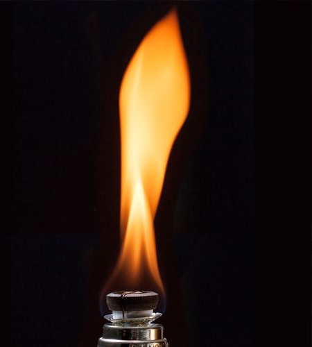
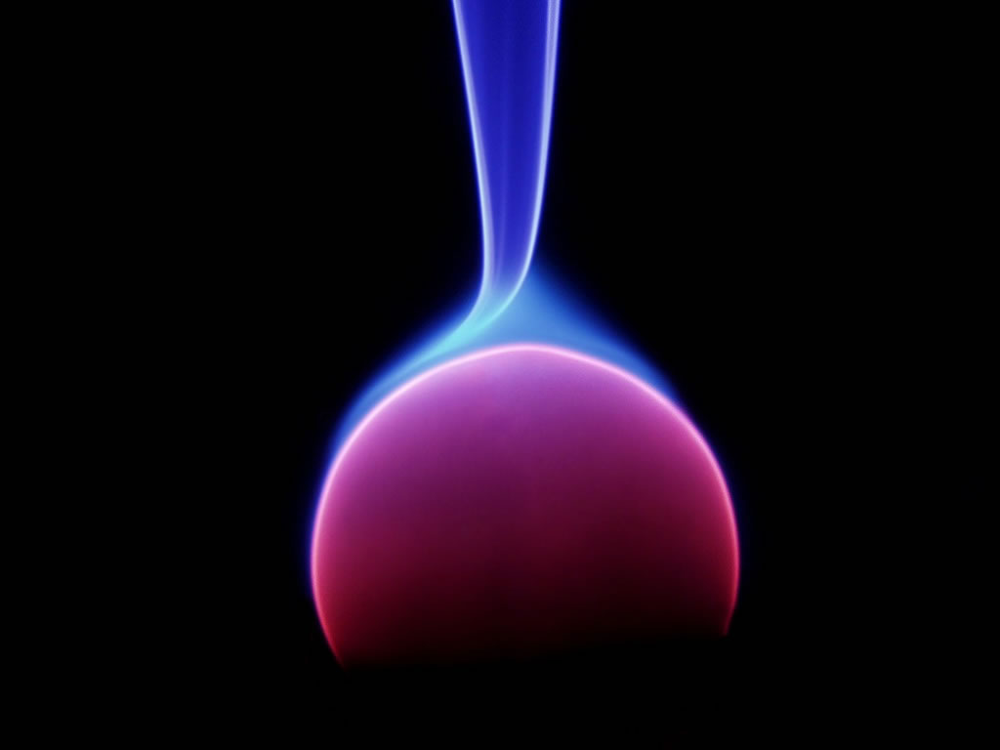
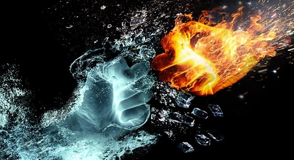

A energia é encontrada em várias formas como a energia térmica, física, química, radiante e elétrica. O nosso site consiste em um estudo sobre a termodinâmica que nada mais é do que o estudo sobre a energia térmica. A primeira lei da termodinâmica aplica o princípio de conservação de energia. A energia total em um sistema fechado é sempre conservada, permanecendo constante e simplesmente mudando de uma forma para outra. Desta forma o calor é uma forma de energia que pode ser gerada a partir de um trabalho ou convertida em trabalho. A segunda lei da termodinâmica afirma que há uma tendência na natureza de avançar para um estado de maior desordem molecular.
A entropia é uma importante grandeza física utilizada para medir o grau de desordem de um sistema. Quanto maior for a variação de entropia de um sistema, maior será sua desordem, ou seja, menos energia estará disponível para ser utilizada. Os cristais sólidos, a forma de matéria mais regularmente estruturada, possuem valores de entropia muito baixos. Os gases, que são mais altamente desorganizados, possuem altos valores de entropia. A segunda lei da termodinâmica afirma que o calor nunca irá com "seu próprio esforço" se transferir de uma região de temperatura baixa para uma região de temperatura mais alta.


A termodinâmica é aplicada em todos os processos que envolvem a mudança de estados. É utilizada nas máquinas térmicas da meteorologia, fazendo a medição de pressão e temperatura, umidade relativa do ar. Ou seja, existem inúmeros instrumentos que permitem medir as características variáveis dos gases, como os hidrômetros, que conferem a umidade relativa do ar e o barômetro, que afere a pressão. A termodinâmica também é aplicada em larga escala nos automóveis. No processo de combustão, há uma grande liberação de calor e